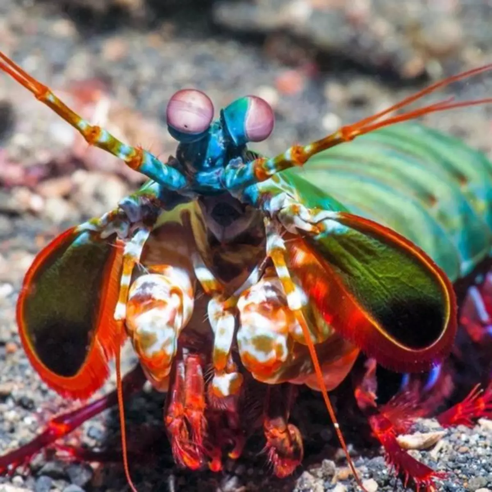

Lagosta-boxeadora
A Lagosta-Boxeadora ou Mantis Shrimp (Camarão Mantis), como é conhecida popularmente a espécie Odontodactylus Scyllarus, é um dos animais mais belos e devorador dos oceanos, porque devido à sua força, consegue quebrar conchas de caranguejos, caramujos e até mesmo caçar peixes com uma velocidade espetacular.
Na natureza, as Lagostas-Boxeadoras são encontradas em recifes de coral na Austrália, Fiji, Tonga e Vanuatu a profundidades de até 36 metros. Além desses locais, a espécie também foi encontrada em recifes costeiros no sul da Nova Caledônia, no Japão e na Coréia.
A Lagosta-Boxeadora é um animal extremamente colorido, mas além de sua variedade de cores e super força, esse invertebrado possui os olhos mais complexos do reino animal. Para entender o poder de seu sistema visual, essa espécie pode ver dez vezes mais cores do que nós humanos, que temos apenas 3 cones em vez dos 16 encontrados nelas. Além de detectar o espectro visível, a Lagosta-Boxeadora também pode detectar infravermelho e ultravioleta.
As Lagostas-Boxeadoras são conhecidas por terem o soco mais forte do reino animal. Para se ter uma ideia, o impacto de seus dois apêndices superdesenvolvidos (semelhantes a martelos) chamados de porretes de Dáctilo podem esmagar sua presa com uma força de 60 kg/cm². Se você olhar de perto, essas "super garras" atingem suas presas na velocidade de uma bala de calibre 22, e o animal produz um punho que ferve a água ao redor.
Alimentação
Sua alimentação é carnívora. As Lagostas-Boxeadoras se alimentam de muitas coisas, incluindo crustáceos como caranguejos e camarões, além de lulas, mariscos e mexilhões. Curiosamente, elas vão até comer pequenos peixes desavisados que passam. Não é à toa que esse animal é considerado um super predador da natureza. Apesar de suas vantagens óbvias na capacidade de caça, elas ainda têm uma vida curta em comparação com muitas outras espécies de camarão. Uma Lagosta-Boxeadora pode sobreviver até 3 semanas sem comida, mas idealmente deve ser alimentada duas vezes por semana ou uma vez por dia.
Reprodução
As Lagostas-Boxeadoras desenvolveram algumas formas complexas de comunicação, muitas vezes envolvendo postura corporal, química e dicas visuais, bem como postura e apresentação.
A maioria desses animais são territoriais e defendem seu espaço a todo custo. No entanto, mesmo quando eles estão lutando, eles ainda podem se acertar de forma não letal com seus projéteis. Isso permite que eles avaliem quem é o concorrente mais adequado.
Especialmente quando se trata de acasalamento, a fêmea carrega os ovos fertilizados sob seu corpo por 5-6 semanas. Após a eclosão, os filhotes começam a caçar como adultos. Nesta fase, eles precisam de mais alimentos ricos em proteínas para crescer.
Demora cerca de 50 a 70 dias para os filhotes atingirem a idade adulta e começarem a produzir seus próprios filhotes.
